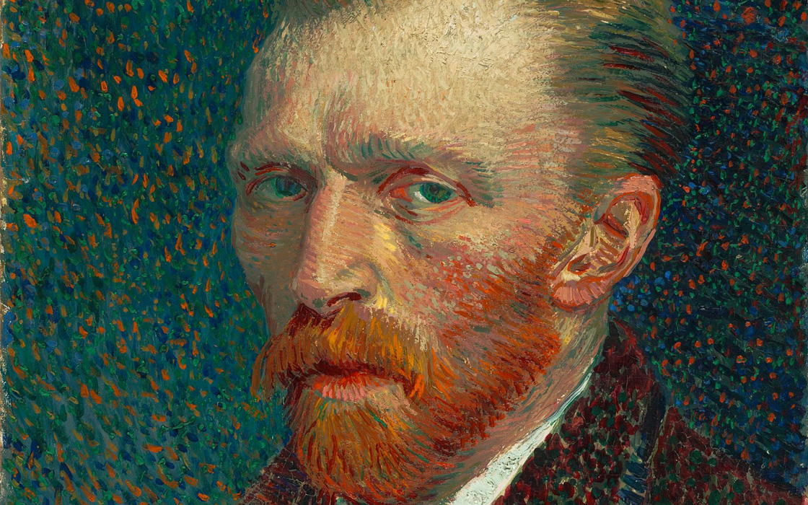
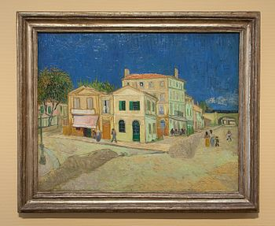

Autoretrato
Este autorretrato es uno de los aproximadamente 40 que van Gogh produjo en un periodo de 10 años, y estos eran una parte importante de su trabajo como pintor; se pintaba a sí mismo porque a menudo carecía del dinero para pagar a modelos. Se llevó la pintura con él a Auvers-sur-Oise, cerca de París, donde la mostró al doctor Paul Gachet, que pensó que era "absolutamente fanático".
Los historiadores del arte están divididos en cuando a si esta pintura o el autorretrato sin barba son el autorretrato final de van Gogh. Ingo F Walther y Jan Hulsker consideran este el último, con Hulsker considerando que fue pintado en Arlés tras el ingreso al hospital después de mutilar su oreja, mientras Ronald Pickvance piensa que el autorretrato sin barba es posterior.
Van Gogh envió el cuadro a su hermano más joven, el marchante de arte Theo; en la carta que lo acompañaba escribió: "necesitarás estudiar [el cuadro] por un tiempo. Espero que notes que mis expresiones faciales se han vuelto mucho más tranquilas, aunque mis ojos tienen la misma mirada insegura que antes, o eso me parece a mí."
Los historiadores del arte Walther y Metzger consideran que "la pintura no muestra una pose bonita ni es un registro realista;... [es de] alguien que ha visto demasiado peligro, demasiada confusión, como para poder mantener su agitación y temblor bajo control."[6] Según Beckett los colores se disuelven y los patrones turbulentos a un tiempo indican una sensación de tensión y presión, que simboliza el estado mental del artista, bajo presión mental, física y laboral.
El Museo de Orsay en París, que obtuvo el cuadro en 1986, considera que "la inmovilidad del modelo contrasta con la ondulación del cabello y barba, repetidos y amplificados en los arabescos alucinantes del fondo.”
La Casa Amarilla

La casa amarilla (en francés, La Maison jaune, en neerlandés, Het gele huis) es el título dado a una pintura al óleo del pintor neerlandés postimpresionista Vincent van Gogh, realizada en 1888. La casa albergaba el estudio que alquiló en el mes de septiembre, ya que deseaba arraigar en una casa que sintiese como propia. Allí se trasladó el día 17, y sus cartas reflejan el optimismo que le embargaba entonces.
Su idea era compartir la casa con Theo, y con los miembros del estudio. El hecho coincide con una conciencia creciente de los cambios en su trabajo.
El edificio era el número 2 en la Place Lamartine de Arlés. El artista alquiló dos habitaciones grandes en la planta baja como estudio y una cocina y dos habitaciones en el primer piso con vistas a la plaza. La ventana con las contraventanas abiertas del primer piso es la habitación de invitados, a donde se mudó Paul Gauguin en octubre de 1888, con idea de crear un taller de artistas. La ventana con los postigos cerrados es la de la habitación de van Gogh, que plasmó en El dormitorio en Arlés.
En la parte izquierda del edificio había un restaurante y tienda de comestibles, cuyo letrero se ve sobre el toldo. Aquí Vincent comía todos los días según una carta a Theo de septiembre de 1888. En el extremo derecho la calle se convertía en la Avenue Montmajour y pasaba bajo dos puentes ferroviarios.
Estos edificios fueron destruidos por una bomba aérea el 25 de junio de 1944.